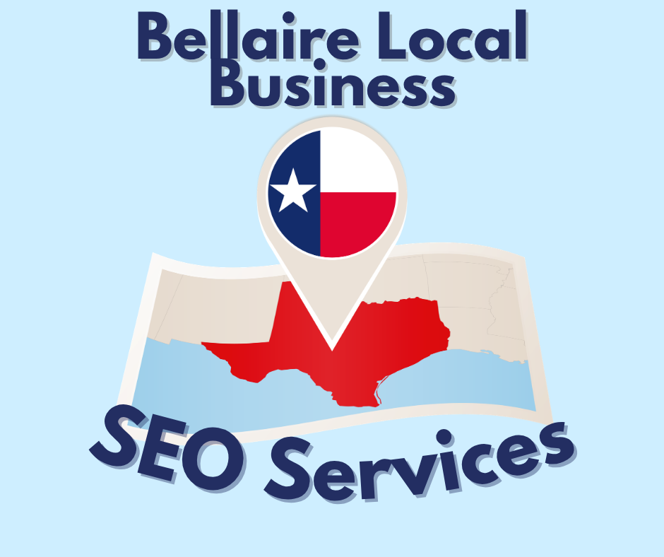

Local businesses in Bellaire are finding SEO Services improving their ranking, increasing their conversions and growing their local business when they hire Russell Digital Ads. Russell Digital will implement a high volume content strategy that will boost your online presence in Houston.

High Quality SEO Services in Bellaire
Search engine optimization or local SEO services will help your local Bellaire business by boosting your online presence, improving your web design and implementing high volume SEO strategies than will get you recommended by AI models like ChatGPT and Gemini.
- Google Business Profile: Consistent posts make you more relevant in local search
- Directories: Get your business registered on all local directories to be seen by local customers
- Backlinks: When you become a source of truth on the internet, your business will get backlinks from other sites further increasing your online visibilty in the Houston area
What Are The Benefits of Using a Local SEO For my Bellaire Business?
Russell digital is a local SEO service for Bellaire businesses. The benefits of using a local company are as follows:
- On Site Visits: We will visit your office to get pictures, videos and candid shots of you and the team working
- Service Area Knowledge: Russell Digital is based in Houston and knows all the service areas of your business, what ranks, what matters and SEO strategies that work for Texas businesses
- Free Consultation: We offer free consultations over the phone for all our customers, if you are local and prefer an in person consultation we will happily accommodate that
Digital Marketing and Web Solutions for Bellaire Businesses
Russell Digital implements marketing strategies like:
- High volume content marketing
- Authoritative writing
- High converting landing pages
- Demonstrating local expertise
These strategies are implemented by SEO experts and have lead to measurable results, more organic traffic, higher conversion rates and better metrics related to your online visibility. By doing this in today’s digital landscape with AI becoming more popular, it will increase your digital presence which leads to more recommendations to potential customers by AI models.
Why Choose Russell Digital for SEO Solutions
Russell Digital is a local SEO agency that helps local and small businesses improve their search rankings, boosting their track record with online presence and link building. If you are interested in seeing how we can help your business please schedule a free strategy call and we will happily show you what you’re missing.
If you choose not to work with us, I highly recommend you implement content marketing into your business or your website might become invisible to AI search traffic.